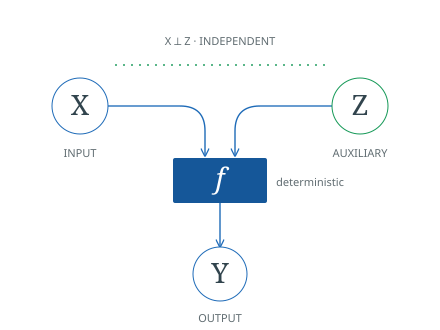

Formalized in Lean: the definitions and main results of the six-page ISIT 2026 paper. Built with LeanInfoTheory v0.1.0 and Lean 4.33.1. See the documented scope, qualifications and exclusions.
About the project
This project formalizes On Perfect Functional Representations by Serhat Emre Coban, Yanina Y. Shkel and Emre Telatar. It studies when a functional representation Z of given (X, Y) ∼ pXY (i.e. a random variable Z satisfying X ⫫ Z and H(Y|XZ) = 0) becomes the most informative about Y (i.e. H(Y|Z) achieves the natural lower bound I(X;Y)).
The formalization develops the paper's semantic foundations, binary cases, channel operations, constructive characterizations and linear-programming criteria. It is a downstream case study of LeanInfoTheory: the reusable information-theory library supplies the foundations, while the paper-specific mathematics stays in this repository.
Paper authors: Serhat Emre Coban, Yanina Y. Shkel and Emre Telatar.
Lean formalization: Serhat Emre Coban.
Read the formalization
- Main results — a short guide to the proved statements and their assumptions.
- Mathematical blueprint — individual definitions, results and examples, proof ideas and Lean links. Explore the interactive dependency graph or read how the ideas connect.
- Lean API documentation — searchable declarations, compiler-generated types and exact source links.
- Discussion and limitations — scope, normalization proof feedback, LP indexing and library reuse.
- Reproduce and cite — installation, validation, dependency versions and attribution.
Functional and perfect representations
A functional representation reconstructs an output using an input and independent auxiliary randomness:
A perfect representation attains the information bound:
For a functional representation with finite value alphabets, equality is characterized by the Markov property X → Y → Z. The formal contracts retain explicit support and finite-alphabet hypotheses.

Main formalized results
- Representations and binary cases. Canonicalization, singularity, maximal coupling and the attained binary information optimum.
- A constructive normal form. Finite channel operations reorganized as proportional splits, support splits, then proportional merges.
- Perfect channels, characterized. Finite operation paths to and from a simple seed channel give an exact structural criterion.
- Primal and dual LP criteria. For finite singular channels, perfect representability is equivalent to an attained optimum of one.
What formalization clarified
A finite cascade is not by itself a termination argument. Expanding local rewrites require more than an intuitive inversion count. The Lean proof establishes the normal-form theorem by induction on the original finite path, constructing a finite certificate and then realizing its three ordered blocks.
Read how formal verification clarified the normalization proof.
Built on LeanInfoTheory
LeanInfoTheory supplies channels, entropy, mutual information and their foundational identities. Mathlib supplies the underlying probability and mathematical infrastructure. The paper-specific constructions remain here.
The case study is completed against the immutable LeanInfoTheory v0.1.0 release; no upgrade is required to reproduce it. See the measured reuse evidence and build instructions.